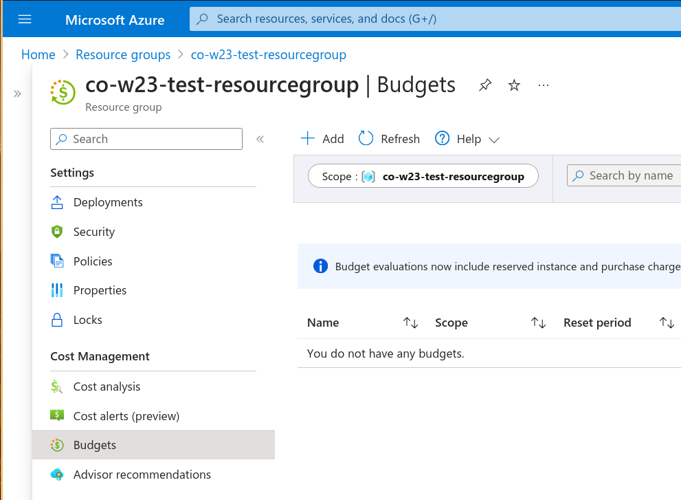

Intro to Azure IoT & Tools
Platform as a Service (PaaS)
Platform as a service (PaaS) is a complete development and deployment environment in the cloud.
PaaS Includes: - Infrastructure: - servers, storage, and networking, - Platforms: - development tools, business intelligence services (BI), database management systems, and more.
PaaS is designed to support the complete web application life-cycle: building, testing, deploying, managing, and updating.

Compasion of SaaS, PaaS and IaaS platforms
SaaS vs PaaS vs IaaS What is PaaS?, Microsoft.
Adafruit IO (AIO) is a complete software solution but it also included a Python library used for developing a device specific application. AIO is between a software as a service (SaaS) and a PaaS. We did not need to worry about data storage, application logic, authentication, etc.
Moving forward, we will be implementing our IoT solutions using Microsoft Azure as PaaS.
See more in What is PaaS by azure.microsoft.com
IoT Subsystems
We can breakdown an IoT solution into subsystems and explore how information flows between them:
Subsystems of IoT architecture Examine systems of an IoT architecture, Microsoft.
IoT Devices: - The physical devices and sensors where data originates.
Cloud Gateway: - The Cloud Gateway provides a cloud hub for secure connectivity, telemetry, event ingestion and device management (including command and control) capabilities.
Stream Processing: - Processes large streams of data records, evaluates rules for those streams, and further routes the data.
Storage: - Storage can be divided into warm path (data that is required to be available for reporting and visualization immediately from devices), and cold path (data that is stored longer term and used for batch processing).
User Interface and Reporting: - The user interface for an IoT application can be delivered on a wide array of device types, in native applications, and browsers.
Business Process Integration: - Facilitates executing actions based on insights garnered from device telemetry data during stream processing. Integration could include storage of informational messages, alarms, sending email or SMS, integration with CRM, and more.
We will use Microsoft Azure to manage each sub-system individually.
Azure IoT Services
Azure offers many IoT-related services (see image below). In this course we’ll only explore a few.
 Azure IoT Reference Architecture, Microsoft learn
Azure IoT Reference Architecture, Microsoft learn
IoT Hub Documentation
Azure IoT Hub Documentation hosts most of the documentation we will be using.
Please get familiar with the left-hand menu, including the “Quickstarts” and “How-to guides”

Azure Resource Group & Zones
A resource group is a “container” that holds related resources for an Azure solution (such as your IoT system).
The resource group can include all or a subset of the resources for the solution. You decide how to allocate resources to resource groups based on what makes sense for your organization. Generally, group resources share the same lifecycle (deploy, update, and delete).
Azure resources and their groups must be deployed to a particular region.
To create a resource group see guide Manage Azure resource groups by using the Azure portal
Azure Regions
Azure operates in multiple datacenters around the world. These datacenters are grouped in to geographic regions.
To see a list of all Azure regions see azure geographies.

Map of Azure Regions (2017) Thomas Poppelgaard.
Canada has two Azure regions:
- Canada Central: located in Toronto (with 3 zones).
- Canada East: located in Quebec City (no zones).
Some services are only available in certain regions. For example, Azure IoT Central is not available in the Canada East region.

Azure Zones
Azure availability zones are physically separate locations within each Azure region that are tolerant to local failures.
Tolerance to failures is achieved because of redundancy and logical isolation of Azure services. To ensure resiliency, a minimum of three separate availability zones are present in all availability zone-enabled regions.

Azure region with 3 zones and one disaster recovery location. Regions and availability zones, Mocrosoft.
Azure IoT Dev Tools
Azure offers several developer tools to create, manage and connect to the IoT Hub service.
Some tools have nearly the same functionality. Choose the one that best works for you.
Azure Portal
The Azure Portal is a browser-based portal for IoT Hub and devices. Also works with other Azure resources including IoT Central.
| Documentation | Quick Start | IoT Example | |
|---|---|---|---|
| Azure portal documentation | What is the Azure portal? | Create an IoT hub with Azure portal |

Azure CLI, Cloud Shell & IoT Extension
Azure CLI is a terminal tool to manage Azure services offered as Bash and PowerShell shells.
| Documentation | Quick Start | IoT Example | |
|---|---|---|---|
| Azure CLI documentation | Get started with Azure CLI | Create an IoT hub with CLI |
Azure CLI can be installed in your local machine or run from the browser via the Cloud Shell (see below).
To use it locally, see Install Azure CLI.
Cloud Shell
Azure Cloud Shell is the ability to run the Azure CLI directly in the browser (most convenient).
| Documentation | Quick Start | IoT Example |
|---|---|---|
| Features & tools for Azure Cloud Shell | Quickstart for Azure Cloud Shell | Same examples as Azure CLI |
Start the Cloud Shell from anywhere in the Azure portal by clicking on it Cloud Shell icon (below):


The first time you start the Azure Cloud Shell you will be asked to setup an account.
Azure IoT extension for Azure CLI
Azure CLI uses “extensions” in order to manage different Azure services.
The Azure IoT extension uses the sub-command az iot to control IoT related sevices.
| GitHub Repo | Documentation | IoT Examples |
|---|---|---|
| azure-iot-cli-extension | List of az iot hub commands |
Same examples as Azure CLI |
Azure IoT Tools for VS Code
There is a VS Code extension to test and mange IoT Hub services.
| GitHub Repo | Documentation | IoT Examples |
|---|---|---|
| vscode-azure-iot-toolkit | Wiki page | Create an IoT hub using the Azure IoT Tools for Visual Studio Code |
IoT Explorer & PowerShell
Two other tools worth mentioning but less used in this course:
| Tool | Description | Documentation |
|---|---|---|
| Azure IoT Explorer | Connects to an existing IoT hub to manage devices. Cannot create IoT hubs. Often used with CLI or Portal. | Azure IoT Explorer |
| Azure PowerShell | PowerShell interface for creating and managing IoT applications | Create an IoT hub with PowerShell |
Azure Account
Students get $100 of credit for 12 months and free developer tools without a credit card.
Create an account and see details here.
The student account can be renewed annually (including $100 credits) for as long as you are a student.
Most things we’ll do with Azure will use free services. We will occasionally use some of your free credits (~$20).
Checking your balance üí∏
As you experiment with Azure you might want to know your current balance.
TL:DR 1. Sign in to the Azure portn in to the Azure portal.al. 2. Search for Cost Management 
Select Payment methods
Check your Azure credits panel.

For details check Track Microsoft Customer Agreement Azure credit balance
Budget Alerts
It’s possible to setup email alerts when your Azure spending exceeds a dollar threshold. This avoids unexpected spending of Azure credits.
There are two approaches to setting up a Budget in the Azure Portal:
Open the panel (aka “blade”) for the Resource Group in question, and then create a new Budget for that group.
Create a Budget for your account under Cost Management + Billing and then apply a filter according to ResourceGroupName in order to target a specific Resource Group.
The first approach involves a few less steps so it is described below.
- For information on creating a budget from the Cost Management blade, see How to set up Azure budget alerts by TechTarget.com.
- For details on using and managing budgets, see official tutorial: Create and manage Azure budgets.
Create a Budget for a Resource Group
- In the Azure Portal Home, select the Resource groups service.
- Select the resource group you want to monitor with a budget.
- In the left panel, select Budgets under the Cost Management group and select Add.

- Give your budget a name and an amount.

- Select the percent spending for the alert and the email to receive the notification.
- Click Create.